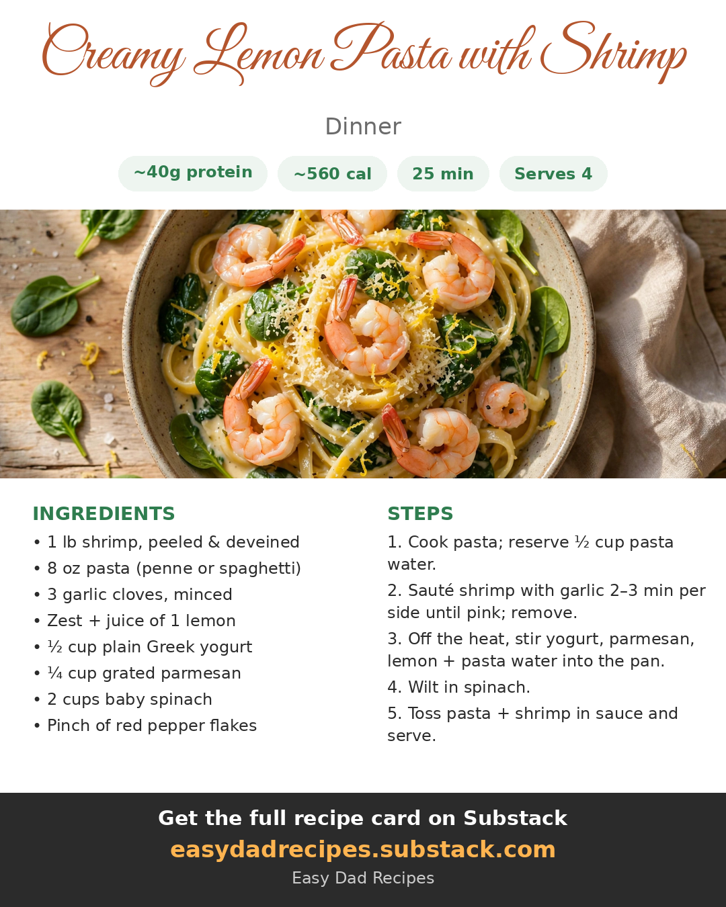

2026-10-17
Creamy pasta without the food coma. Greek yogurt, parmesan, and lemon do the work here — no heavy cream, no guilt, and dinner is on the table in 25 minutes. The shrimp get sautéed separately in the pan so they stay pink and snappy.
The sauce stays light and creamy, the lemon keeps it bright, and each serving packs about 40g of protein — all in a fast 25-minute dinner.
Here's the card — save it for next time:

Want the printable version? Get it here: Creamy Lemon Pasta with Shrimp
Credit: Recipe inspiration: the 'Creamy Lemon Pasta with Shrimp' reel by Seafood Network (@seafood_network)
Also on Substack — subscribe for email updates.
— Dad